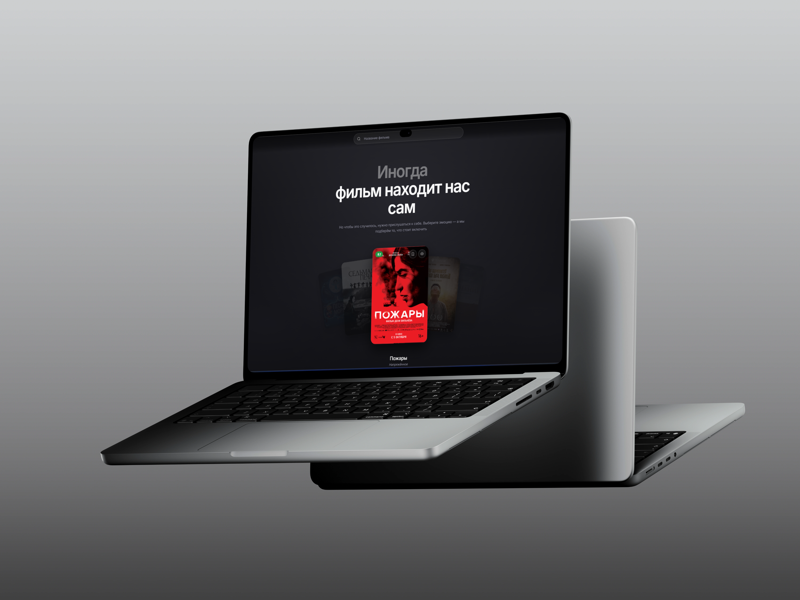
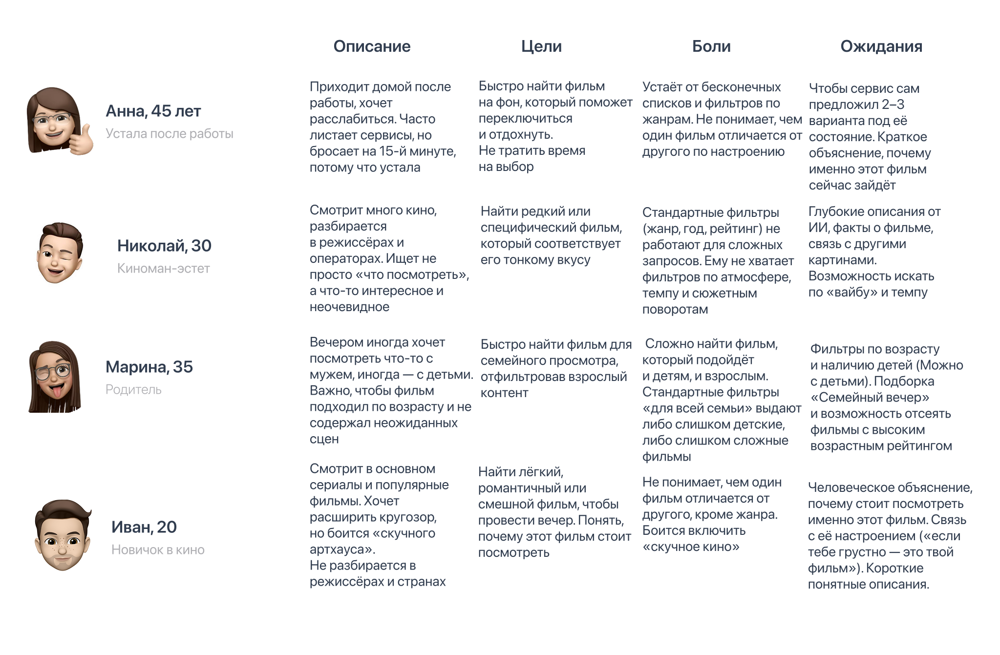
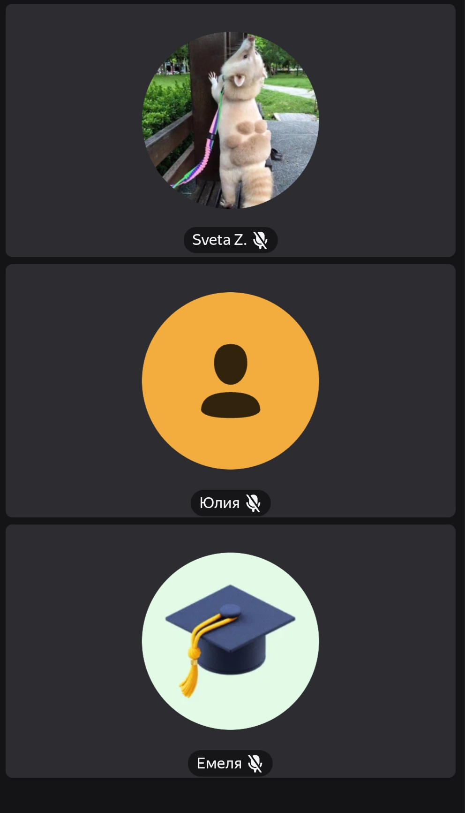
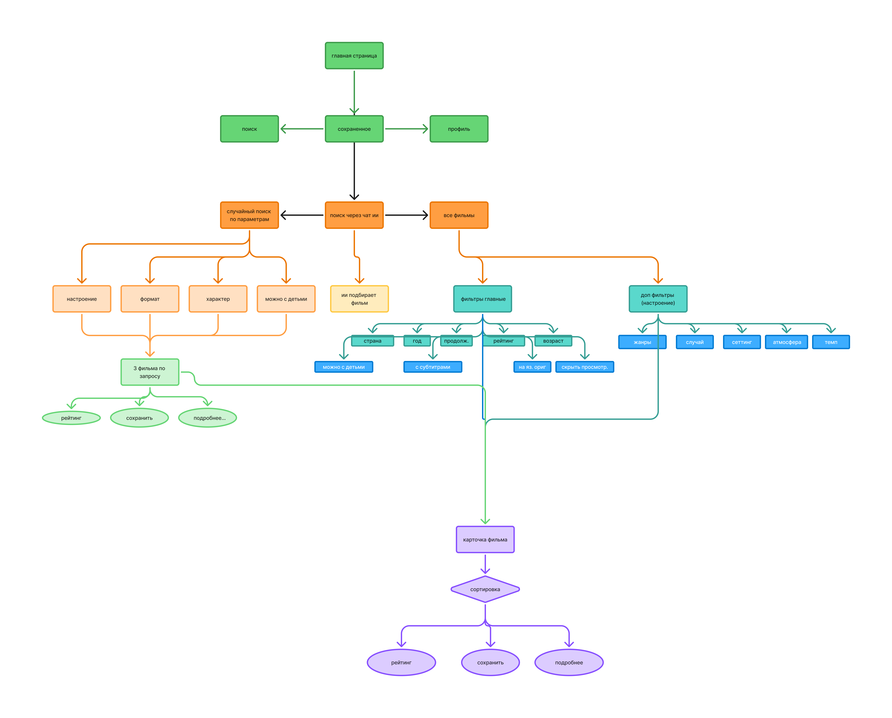

МувиМуд —
веб-сервис для подбора фильмов по настроению
Кейс о том, как создать платформу, которая помогает найти кино под текущее эмоциональное состояние

Контекст
Когда человек открывает онлайн-кинотеатр, он сталкивается с десятками подборок, сотнями постеров и стандартными фильтрами. Но далеко не всегда он знает какой жанр хочет посмотреть. Чаще пользователь приходит с запрососм под настроение. Для решения этой проблемы была разработана киноплатформа МувиМуд. МувиМуд — концепция киноплатформы, которая объединяет подбор по настроению, интеллектуальный поиск и персонализированные рекомендации, помогая быстрее перейти от желания посмотреть кино к конкретному выбору
Роль
Год
Тип
Инструменты
Коротко о проекте
Проблема
Пользователю сложно быстро найти фильм, который соответствует его текущему настроению.Пользователь долго листает каталоги, не находит подходящий вариант и в итоге затягивают выбор или вовсе откладывают просмотр
Что сделала
Исследование → концепция → сбор интерактивного прототипа → проведение юзабилити-тестирования на 5 пользователях и доработка интерфейса по результатам тестирования
Результат
Создан интерактивный прототип сервиса с несколькими сценариями поиска: подбором по настроению, поиском через текстовый запрос и расширенными фильтрами. По результатам тестирования интерфейс был доработан
Дискавери
Изучила конкурентные решения, проанализировала пользовательские отзывы и провела интервью, чтобы разобраться в причинах сложностей при выборе фильма
Систематизировала наблюдения, выделила пользовательские потребности, сформулировала JTBD и определила основные сценарии сервиса
Разработала структуру интерфейса и интерактивный прототип, проверила основные сценарии на пользователях и внесла изменения по результатам тестирования
Изучение проблем
Чтобы понять, действительно ли пользователи сталкиваются с трудностями при выборе фильма, я использовала два источника информации: анализ пользовательских отзывов и глубинные интервью.
Отзывы пользователей
Анализ отзывов на Кинопоиске, App Store, IRecommend и Reddit — что раздражает в существующих сервисах.
Глубинные интервью
5 интервью с пользователями разных сценариев: уставшие после работы, киноманы, родители, новички.


Проблемы
Сложность выбора
Когда нет конкретного запроса, пользователю приходится просматривать большое количество фильмов, сравнивать варианты и самостоятельно принимать решение
Ограниченность стандартных фильтров
Жанр, рейтинг и год выхода не всегда помогают найти фильм под конкретное настроение или желаемую атмосферу
Недостаток информации для принятия решения
Пользователь видит постер и рейтинг, но не понимает, чем именно этот фильм зацепит лично его. Без краткого описания ценности приходится либо рисковать, либо откладывать просмотр
Ключевые инсайты
В ходе исследования я выделила четыре ключевых инсайта. Каждый построен по структуре: что я увидела → что это значит → какую возможность это открывает для продукта.
Пользователю не всегда нужен конкретный жанр
В ходе исследования я обратила внимание, что выбор фильма не всегда начинается с чёткого запроса. Иногда пользователь знает, какое впечатление хочет получить, но не может сформулировать это через стандартные параметры каталога.
Люди выбирают кино не по жанру, а по настроению и контексту — «что-то лёгкое на вечер», «фильм для свидания», «чтобы отключить голову».
Поиск должен учитывать настроение и атмосферу, а не ограничиваться жанрами.
Большой каталог не всегда помогает сделать выбор
4 из 5 участников упоминали усталость от долгого просмотра вариантов и сложности с поиском подходящего фильма.
Обилие вариантов не упрощает выбор, а усложняет его. Пользователь закрывает сервис, так и не решив, что посмотреть.
Важно сократить количество нерелевантных вариантов и предложить более быстрый сценарий подбора.
Пользователю недостаточно рейтинга и жанра
3 из 5 участников отмечали, что им не хватает информации, которая помогла бы понять, почему конкретный фильм может им понравиться.
Рейтинга и жанра недостаточно для принятия решения. Нужна эмоциональная причина — «почему это зайдёт именно сейчас».
Карточка фильма должна давать короткое и понятное объяснение его особенностей.
Поиск должен учитывать разные уровни определённости запроса
Одному пользователю достаточно выбрать настроение, другому важно уточнить сюжет, атмосферу или темп фильма.
Нет единого сценария выбора. Люди входят в сервис с разной глубиной запроса — от «хочу кино» до «ищу медленный триллер про маньяков».
Нужно предусмотреть как быстрый подбор, так и более точный поиск с дополнительными параметрами.
Персоны
На основе интервью я выделила несколько типов поведения при выборе фильма. Они отличаются не столько демографическими характеристиками, сколько потребностями и тем, насколько точно пользователь понимает, что хочет посмотреть Персоны помогают показать эти различия и определить сценарии, которые должен поддерживать сервис

Джоб стори
На основе персон и их болей я сформулировала ключевые сценарии использования продукта (JTBD) и связку «Боль → Решение». Это помогло перейти от абстрактных проблем к конкретным функциям интерфейса.
- Высокий приоритет — боль упоминалась у 4–5 респондентов, затрагивает большинство персон и блокирует основной сценарий использования сервиса.
- Средний приоритет — боль отмечали 2–3 респондента, важна для конкретной группы пользователей, но не критична для базового сценария.
- Низкий приоритет — единичные упоминания, полезно реализовать, но не влияет на ключевые метрики продукта.
Задачи в рамках проекта
На основе выявленных проблем я сформулировала задачи, которые определили направление дальнейшей работы
Сократить количество действий, необходимых для перехода от желания посмотреть кино к выбору конкретного фильма.
Дать возможность искать фильмы не только по жанрам и стандартным параметрам, но и по настроению, атмосфере и содержанию.
Предоставить пользователю достаточно информации о фильме, чтобы он мог оценить, подходит ли ему этот вариант, не переходя на сторонние ресурсы.
Критерии успеха
Пользователь находит подходящий фильм за 3–4 клика
Пользователь понимает, почему фильм стоит посмотреть, благодаря блоку «Почему стоит посмотреть»
Основные сценарии поиска доступны и не трубуют от пользователя лишних действий
Ценность
МувиМуд — сервис персонализированного подбора кино на основе эмоционального состояния пользователя
Ценность:: более релевантные рекомендации могут повысить вероятность того, что пользователь найдёт подходящий фильм и продолжит пользоваться сервисом. Эту гипотезу можно проверить на следующем этапе — после запуска продукта и сбора поведенческой аналитики.
Ценность: закрыть самую частую боль — долгие поиски «того самого» фильма: вместо изучения жанров, рейтингов и рецензий достаточно обозначить своё настроение, и алгоритм быстро предложит подходящие варианты
Гипотезы
На основе пользовательских потребностей я сформулировала гипотезы о том, какие механики могут упростить выбор фильма.
Быстрый подбор по настроению
Если предложить пользователю выбрать настроение и получить несколько подходящих фильмов, ему будет проще начать поиск без необходимости изучать весь каталог.
Сценарий случайного подбора с выдачей трёх фильмов.
Поиск через свободный текстовый запрос
Если пользователь сможет описать желаемый фильм своими словами, это поможет находить картины, которые сложно подобрать стандартными фильтрами.
ИИ-помощник на главной странице.
Объяснение ценности фильма
Если добавить короткое описание того, чем фильм может заинтересовать пользователя, ему будет проще принять решение о просмотре.
Блок «Почему стоит посмотреть».
Расширенные фильтры
Если разделить параметры поиска по смыслу и дать возможность уточнять настроение, сюжет и атмосферу, поиск станет более гибким.
Основные и дополнительные фильтры.
Похожие фильмы
Если предложить похожие фильмы на странице выбранной картины, пользователь сможет продолжить поиск без возвращения в каталог.
Блок похожих фильмов.
Тематические подборки
Если разместить на главной готовые тематические подборки, пользователю будет проще начать поиск без формулирования запроса.
От тематических подборок я отказалась, так как они перегружали главный экран и конкурировали с основными сценариями поиска.
- Проверена в юзабилити-тестировании — пользователь проходил этот сценарий в тесте, и решение помогло ему выполнить задачу.
- Требует дополнительной проверки — гипотеза реализована и логична, но не была приоритетом в текущем тестировании; её эффект нужно оценивать на живом продукте.
- От идеи отказалась после тестирования — решение проверили в прототипе, и тестирование показало, что оно мешает основному сценарию.
Первый прототип
На основе сформированных гипотез я перешла к созданию первого прототипа. На этом этапе мне хотелось объединить несколько способов поиска фильма: тематические подборки, подбор по настроению, фильтры и поиск через текстовый запрос. Поэтому следующим этапом стало тестирование прототипа, которое помогло выявить слабые места первоначального решения
*Архивная версия. В ней использовались тематические подборки, от которых мы позже отказались.

Тестирование и итерация
Собранный прототип я проверила на 5 респондентах с помощью юзабилити-тестирования и глубинных интервью. Это позволило увидеть реальное взаимодействие с интерфейсом, а не только догадки.

Скриншот глубинного интервью
Проблема → Решение
В первом прототипе я сосредоточилась на том, чтобы предоставить пользователю как можно больше возможностей для выбора. Однако на тот момент я ещё не понимала, насколько удобно эти сценарии будут работать вместе. В ходе тестирования я наблюдала за взаимодействием с интерфейсом и выявила то, что существующий прототип не отвечает запросам пользователя. Для более точного протитпа я пошла от проблемы к решению
Проблема Не знает, что посмотреть
Решение Подбор по настроению
Проблема Не хочет изучать сотни карточек
Решение Случайная подборка из трёх фильмов
Проблема Не может выразить запрос через фильтры
Решение ИИ-помощник
Проблема Не понимает, подойдёт ли фильм
Решение Блок «Почему стоит посмотреть»
Проблема Ищет кино с определённой атмосферой
Решение Расширенные фильтры
Проблема Хочет продолжить поиск похожего контента
Решение Рекомендации похожих фильмов
Повторное проектирование
После выделения проблем и решения я вернулась к этапу проектирования и пересмотрела структуру главной страницы. Вместо большого количества конкурирующих элементов я решила выделить три основных сценария. Я также пересмотрела расположение элементов и информационную иерархию, чтобы основные действия были заметнее, а дополнительные возможности не перегружали интерфейс. Таким образом, вторая версия стала результатом пересмотра первоначальной логики взаимодействия.

Юзер флоу
Перед детальной проработкой экранов был описан основной путь пользователя внутри сервиса. Все сценарии приводят пользователя к одной основной задаче - быстро выбрать вариант для просмотра под настроение

.png)
Главная страница
Интерфейс построен вокруг трёх точек входа: карусель рекомендаций, случайный подбор по настроению и ИИ-чат. Каждый путь ведёт к странице фильма, но решает разные задачи пользователя.
Каталог
Каталог предназначен для пользователей, которые хотят самостоятельно просматривать доступные фильмы и постепенно уточнять поиск. Я использовала сетку карточек, чтобы пользователь мог одновременно видеть несколько вариантов и сравнивать их по основным характеристикам. В карточках отображаются ключевые параметры фильма, а сортировка помогает изменить порядок выдачи в зависимости от приоритетов пользователя. Для получения дополнительной информации предусмотрен переход к краткому описанию фильма.
Фильтры
Система фильтров разделена на две вкладки: «Основные» для быстрого сужения поиска и «Дополнительные» для точного подбора по настроению, сюжету и атмосфере. Это позволяет не перегружать интерфейс, но даёт глубину тем, кто ищет конкретное. Такое разделение позволяет не показывать все параметры одновременно и сохранять возможность более детального поиска для пользователей с конкретными предпочтениями.
Страница фильма
Страница фильма завершает сценарий поиска и помогает пользователю принять решение о просмотре. Я разделила информацию на несколько уровней: сначала пользователь видит основные сведения о фильме и действия, которые может выполнить, затем получает более подробное описание, оценки и дополнительный контент
Интерактивный прототип
Прототип родемонстрирует концепцию интерфейса и позволит оценить основные ux-решения
Протестировать МувиМудРезультат
В результате работы я создала интерактивный прототип сервиса, который поддерживает несколько сценариев выбора фильма: быстрый подбор по настроению, поиск по текстовому запросу и уточнение результатов через фильтры.
По итогам тестирования и доработки интерфейса каждая из исходных проблем получила своё решение:
Пересмотрела структуру главной страницы
Огромный выбор превращал поиск в утомительный скроллинг. Пользователи закрывали сервис, так и не выбрав фильм.
Отказалась от тематических подборок и сделала акцент на трёх основных сценариях: карусель, случайный подбор и ИИ-чат.
Пользователь больше не теряется в горизонтальных лентах — сразу видит понятные точки входа под свой запрос.
Разделила фильтры по уровню детализации
Стандартные фильтры по жанрам не отвечали эмоциональному запросу. Люди искали «что-то лёгкое на вечер», а не «комедию».
Основные параметры (страна, год, рейтинг) для быстрого поиска, дополнительные (настроение, сюжет, темп) для точного подбора.
Пользователь может искать как по настроению, так и по конкретным параметрам — сервис подстраивается под разную глубину запроса.
Добавила контекст для принятия решения
Рейтинга и жанра недостаточно, чтобы понять, чем фильм зацепит. Приходилось уходить на сторонние сайты за рецензиями.
Блок «Почему стоит посмотреть» с кратким ИИ-описанием на странице фильма.
Пользователь получает эмоциональный контекст сразу — не нужно читать длинный синопсис или искать отзывы.
Собрала интерактивный прототип
Показать, как все решения работают вместе — от первого экрана до страницы фильма.
Реализовала основные экраны и переходы: главная, каталог с фильтрами, страница фильма, ИИ-чат.
Прототип демонстрирует целостный пользовательский путь — можно потыкать и увидеть, как сервис решает проблемы на каждом шаге.
Точки роста
Текущая версия закрывает базовые сценарии. Ниже — направления, в которых сервис можно развивать дальше.
Папки для сохранённых фильмов
Группировка «Смотрю сейчас», «На выходные», «Семейное» — чтобы избранное превратилось в удобную коллекцию, а не в плоский список
Совместный просмотр
Возможность создать «комнату» с друзьями, вместе выбрать фильм под общее настроение через ИИ и смотреть его синхронно
Умная история просмотров
Сервис сам запоминает, что пользователь уже видел, и учитывает это в ИИ-рекомендациях, избавляя от необходимости вручную ставить галочку «Просмотрено»
Кликабельные жанры и связанные фильмы
Сейчас жанры на странице фильма — просто текст. Если сделать их кликабельными, пользователь сможет одним тапом перейти к подборке похожих картин сразу из фильма, не листая до подборки в конце
Рефлексия
Этот проект стал для меня важным шагом в продуктовом дизайне. Я прошла путь от исследования до проверки гипотез и столкнулась с тем, что мои первоначальные идеи не всегда работают.
Интервью меняют всё
Я думала, что людям просто «неудобно скроллить каталог». Но исследование показало, что за этим стоит страх потратить вечер зря и эмоциональная усталость. Это полностью перевернуло мой подход к проектированию.
Я — не моя целевая аудитория
Это было сложно принять. Мне нравились тематические подборки на главной, но тесты показали, что они создают визуальный шум и путают пользователей. Пришлось без сожалений убрать то, что нравилось мне, но не работало для них.
Прототипирование экономит время
Если бы я сразу начала писать чистовой код, переделывать логику фильтров после тестов было бы мучительно. Интерактивный прототип позволил найти ошибки в UX до того, как они стали техническим долгом.
Простота сложнее, чем кажется
Сделать одну кнопку «Подобрать случайно», которая реально работает, оказалось сложнее, чем нарисовать десять вкладок с фильтрами. Настоящая простота требует глубокого понимания контекста пользователя.